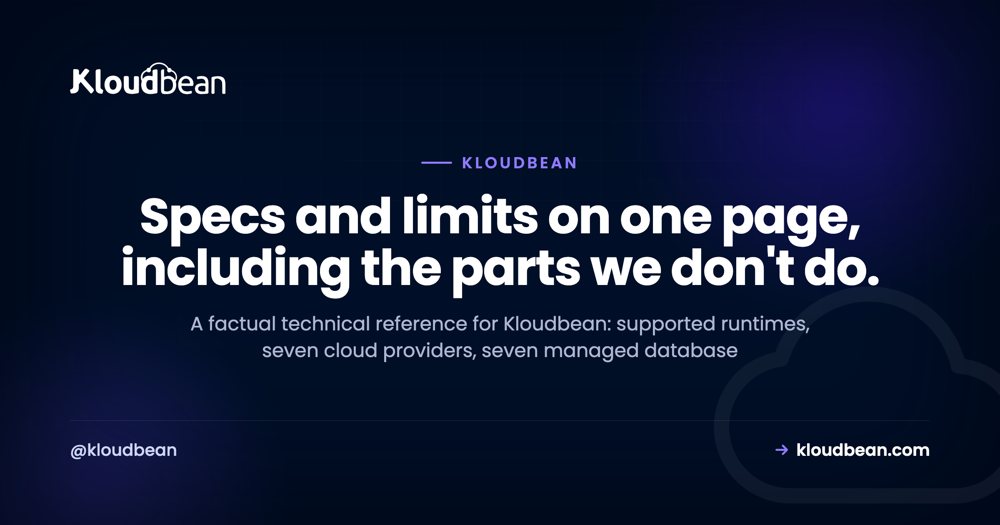

Kloudbean for Developers: The Complete Technical Reference

This is the page to read if you're evaluating Kloudbean as an engineer and you want facts rather than a pitch. What runtimes it runs, which clouds it provisions on, which database engines are managed, how deploys work, what security is on by default, how billing is shaped, and, importantly, what it deliberately doesn't do. Everything here is checkable, and where something is gated behind an Enterprise plan we say so rather than implying it's included.
Kloudbean is a managed cloud hosting platform that runs your whole stack from one dashboard: application servers, managed databases, S3-compatible object storage, static sites, private networking, and a built-in load balancer. It provisions on seven cloud providers and has shipped monthly since November 2023. Applications run always-on as persistent processes rather than scale-to-zero functions, so there are no cold starts. Pricing is flat from $8/mo and egress isn't metered.
The execution model
Start here, because it explains everything else. Your application runs as a persistent process on a real server, managed under PM2 for Node. It boots once and stays up. That means it holds a stable database connection pool, keeps in-memory state if you want it, can run a worker loop, and can hold WebSocket connections for hours. There's no spin-down and no cold start on the first request after a quiet period.
The tradeoff, stated plainly: you're paying for a server whether it's busy or idle. If your project genuinely receives almost no traffic and you don't mind the first visitor waiting, a scale-to-zero free tier will cost you less. Kloudbean is the better fit once the app is real, because always-on removes a whole category of problem instead of asking you to engineer around it.
Cloud providers and regions
You pick the provider and region when you launch a server. Seven providers are supported:
AWS, AWS Lightsail, Google Cloud (GCP), Linode, Vultr, DigitalOcean, and UpCloud.
This matters more than a feature-list line suggests. Provider and region choice determines latency to your users, which jurisdictions you can serve for data-residency purposes, and whether you can stay on infrastructure your team has already standardized on. Keep your application and its database in the same region; cross-region database calls add latency to every single query.
Runtimes and frameworks
| Runtime | What's supported |
|---|---|
| Node.js | Express, NestJS, Fastify, Next.js, React, Vue, Angular. PM2 multi-process supported. Runtime config in the UI. |
| Python | Django, Flask, FastAPI. Runtime config in the UI. |
| Ruby | Supported since October 2024. |
| Java | JVM workloads, supported since September 2024. |
| PHP | WordPress, WooCommerce, Laravel, Magento, Drupal, Joomla. Staging for WordPress and Laravel. |
| Static sites | Free hosting with custom domains, SSL, and built-in visit analytics. |
| One-click apps | n8n, Supabase, OpenWebUI with DeepSeek, Postiz, Penpot. |
One honest note on Go: the platform's published runtime list covers PHP, Node, Python, Ruby, and Java. You can run a compiled Go binary on a managed server, but treat that as server-based rather than a one-click managed Go runtime.
Managed databases
Seven engines, one-click, with automatic backups and access controls, provisioned in the same account as your app:
PostgreSQL, MySQL, MariaDB, MongoDB, Redis, Memcached, and Elasticsearch.
Two things make this practically different from bolting on a separate database provider. First, the app and database sit on a private network, so your connection string points at a private host rather than exposing the database to the public internet. Second, because they're in the same account and there's no egress metering, you're not paying to move your own data between products. Redis here is what you'd point BullMQ at for a job queue, or use as a Socket.IO pub/sub adapter when you scale to more than one instance.
Storage, static sites, and load balancing
- Object storage. S3-compatible buckets with full AWS SDK and CLI compatibility, so existing code using the AWS SDK works by changing the endpoint and bucket. Public and private access controls, and object management from the dashboard. Managed Google Cloud Storage buckets are also available.
- Static sites. Free, with custom domains, SSL, and built-in visit analytics. Useful for a marketing site or docs beside an app.
- Flexible Load Balancer (FLB). Built in and available to enable on any account, not gated to a tier and not a separate product. Virtual load balancers, application pools, SSL management, and access logs. Off by default; turn it on when you need to spread traffic across servers.

Deploys and developer workflow
Connect a Git repository and Kloudbean builds and deploys on every push. GitHub is supported including OAuth. You get deployment history and live build logs streaming into the console, which is what turns a failed install or a bad build into something visible rather than a silently dead app. Beyond that: cron jobs configured from the dashboard without SSH, runtime configuration for Node and Python in the UI, an adm automated deployment utility, and a read-only Platform API (v1) with scoped personal access tokens.
Security defaults and team controls
What's on without you configuring it, and what you can add:
- Baseline hardening. Shorewall firewall and Fail2ban applied automatically. Free SSL certificates.
- Access control. Subusers with User Access Control (UAC) giving granular per-resource, per-action permissions. Social login via Google, GitHub, and LinkedIn. HttpOnly cookie sessions for XSS and CSRF hardening.
- App gating. Basic Auth in front of an app, and IP access control with allow and deny rules supporting CIDR ranges.
- Data protection. Automatic backups on servers and managed databases. Staging sites for WordPress and Laravel.
Pricing model
Flat plans starting at $8/mo. The important structural point isn't the number, it's the shape: your bill doesn't move because traffic did. Egress and bandwidth aren't metered, so a scraper hammering a public endpoint over a weekend is an annoyance rather than an invoice. There's a free trial, and free migration assistance if you're moving an existing app across. Cloudflare is available as a paid add-on for all sites and is free on Enterprise accounts.
What Kloudbean does not do
This section exists because a reference page that only lists strengths isn't a reference. Save yourself the evaluation time:
- Not serverless. No scale-to-zero and no per-request scaling. Processes are persistent. If you specifically want to pay nothing while idle, that's not this.
- Linux only. PHP, Node, Python, Ruby, Java, and their databases. No Windows, .NET Framework, or IIS workloads.
- Kubernetes and autoscaling are Enterprise. So are VPC and VPN private networking, custom architectures, and the Audit Trail. A standard account does not autoscale your app automatically, and we'd rather tell you that than let you discover it.
- You own your code and data. "Managed" covers the server, stack, SSL, backups, and patching. Application bugs are still yours, and a real error in your code will still crash the process.
- Compliance is shared. The platform provides infrastructure controls; application-level compliance is the customer's responsibility.
Enterprise and government
For larger organizations Kloudbean is designed to work like an in-house infrastructure and DevOps team. That tier adds Kubernetes, autoscaling, custom setups and architectures, VPC and private networking, and an immutable, searchable, account-wide Audit Trail with CSV export built for compliance review. Infrastructure runs on tier-1 provider hardware, which is where the uptime foundation comes from.
Where to go next
Start with where to deploy a Node.js app for the decision framework and deploy a Node app to a managed cloud for the hands-on path. Production essentials: background jobs with BullMQ, health checks, graceful shutdown, and structured logging. Data: managed PostgreSQL and S3-compatible object storage. Moving in: from Heroku, from Render, from Railway, or an API off Vercel.
Try it against your own app.
Launch a server on your choice of seven clouds, deploy from GitHub with live build logs, add a managed database on a private network, and keep a flat bill from $8/mo with no egress metering. Free trial and free migration assistance. Start at kloudbean.com, see plans on pricing.
7 clouds · 7 managed DB engines · Always-on under PM2 · S3-compatible storage · Built-in load balancer · Flat from $8/mo
FAQ
What is Kloudbean?
Kloudbean is a managed cloud hosting platform that runs your whole application stack from one dashboard: app servers, managed databases, S3-compatible object storage, static sites, private networking, and a built-in load balancer. It provisions on seven cloud providers and runs applications as persistent always-on processes rather than scale-to-zero functions.
Which cloud providers does Kloudbean support?
Seven: AWS, AWS Lightsail, Google Cloud, Linode, Vultr, DigitalOcean, and UpCloud. You choose the provider and region when launching a server, which determines latency to your users and which jurisdictions you can serve. Keep your app and database in the same region to avoid adding latency to every query.
Which databases does Kloudbean manage?
Seven engines one-click with automatic backups and access controls: PostgreSQL, MySQL, MariaDB, MongoDB, Redis, Memcached, and Elasticsearch. They're provisioned in the same account as your app and reachable over a private network, so the database isn't exposed to the public internet and you aren't paying to move data between separate products.
Does Kloudbean have cold starts?
No. Applications run as persistent always-on processes, under PM2 for Node, so the process stays warm and the first request after an idle period is as fast as any other. There's no scale-to-zero and no keep-warm workaround to maintain. The tradeoff is that you pay for the server whether it's busy or idle.
Does Kloudbean meter bandwidth or egress?
No. Plans are flat, starting at $8/mo, and egress isn't metered, so your bill doesn't move because traffic did. That's the main structural difference from usage-billed platforms, where invocations, CPU, and data transfer combine into a total that's hard to forecast and exposed to bot traffic.
Does Kloudbean support Kubernetes and autoscaling?
Those are Enterprise features, along with VPC and VPN private networking, custom architectures, and the Audit Trail. A standard account does not autoscale your application automatically. For most applications that's fine, since vertical resizing plus the built-in load balancer covers the growth path, but it's worth knowing before you plan around it.